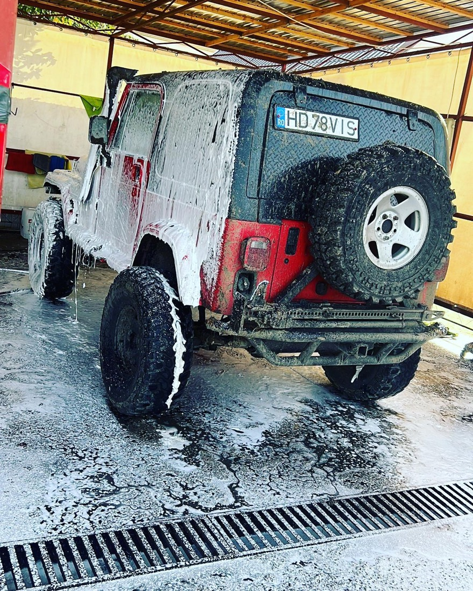
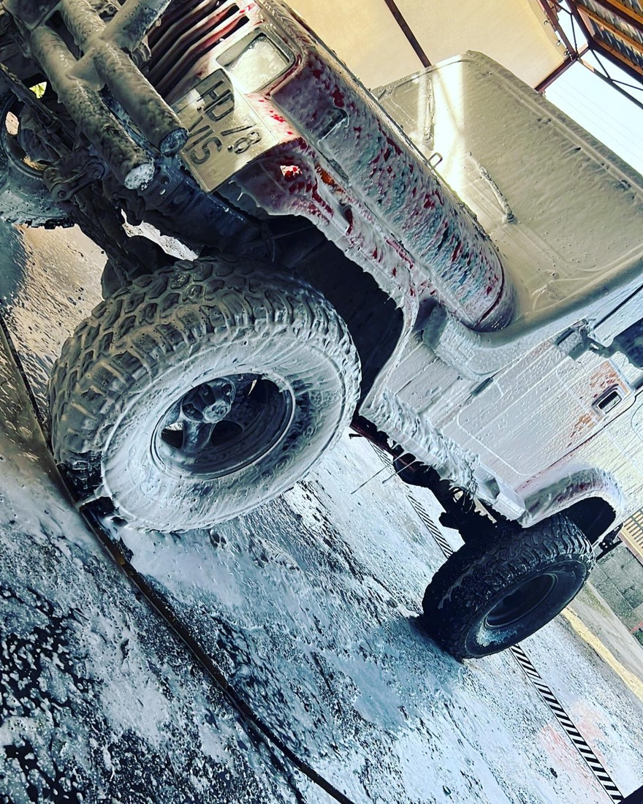
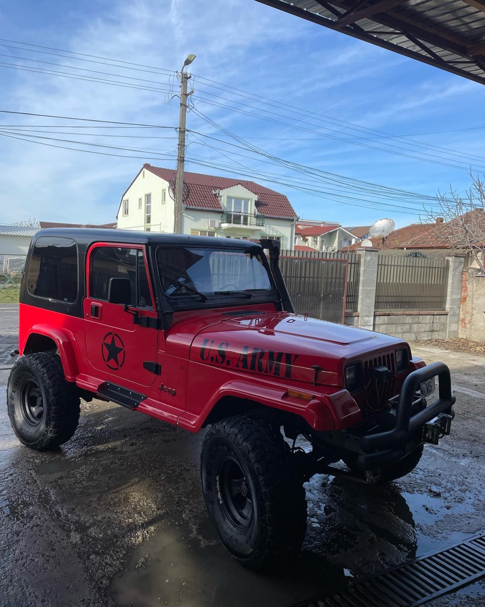
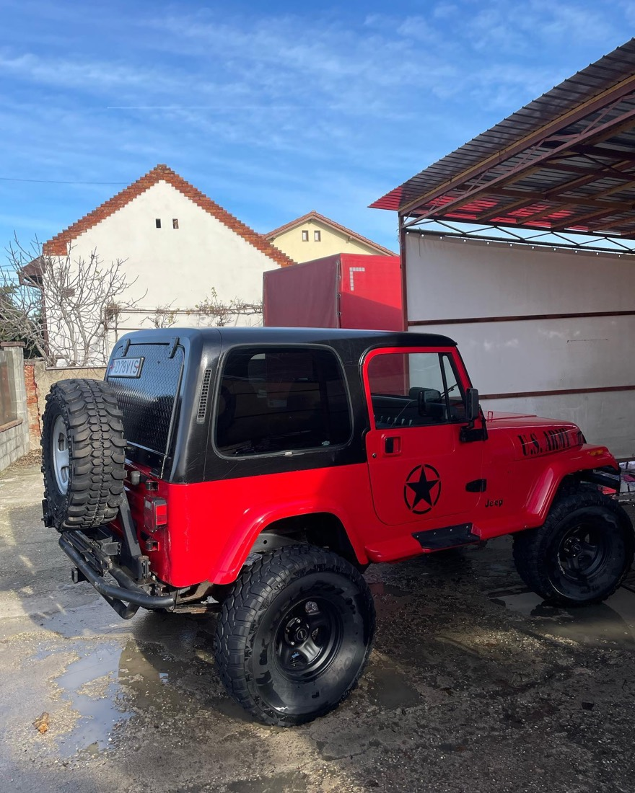
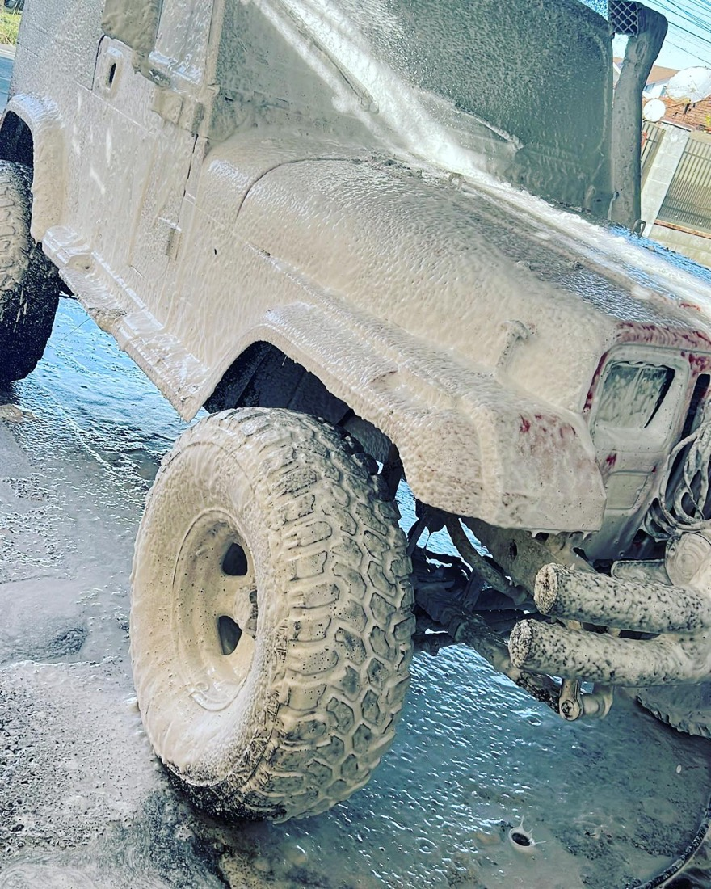

Spălare interior + exterior
Spumă și spălare la caroserie, jante și anvelope, plus aspirare și ștergere în interior. Pachetul complet, mașina lună din față până în spate.
40 lei Cel mai cerutSpălătorie auto · Arad · Calea Radnei
Spălare interior și exterior pe Calea Radnei 139, în Micălaca — de la mașini de oraș la SUV-uri și 4x4 pline de noroi. Simplu, rapid, la preț fix.
Cine suntem
Suntem Car Wash Sava S.R.L. — spălătoria auto de pe Calea Radnei nr. 139, în cartierul Micălaca din Arad. Spălăm de la citadine până la SUV-uri și 4x4-uri de teren pline de noroi.
Lucrăm sub copertină, la firul ierbii: spumă, spălare, jante, anvelope și aspirare. Rapid și fără complicații — treci pe la noi și pleci cu mașina curată.
„Spumă, apă, aspirator — și mașina ta iese ca nouă.”

Servicii & Prețuri
Pachetele noastre de bază, cu preț fix. Pentru mașini mari, foarte murdare sau lucrări speciale, sună-ne — îți spunem pe loc.
Spumă și spălare la caroserie, jante și anvelope, plus aspirare și ștergere în interior. Pachetul complet, mașina lună din față până în spate.
40 lei Cel mai cerutAspirare, ștergere bord și plastice, geamuri curate. Interiorul revine curat și primenit, cât aștepți.
20 leiCurățăm jantele și anvelopele odată cu spălarea exterioară — detaliul care face diferența la o mașină cu adevărat curată.
Inclus la exterior💜 Spălătorie auto pe Calea Radnei 139, Arad. Prețurile de mai sus sunt pentru pachetele de bază. Sună la 0754 752 268 pentru disponibilitate și mașini mari.
Cum decurge
Ne găsești pe Calea Radnei 139, în Micălaca. Sună înainte dacă vrei să prinzi un loc mai repede.
Interior la 20 lei sau interior + exterior la 40 lei. Îți spunem pe loc dacă e nevoie de mai mult.
Spumă activă, spălare atentă la caroserie, jante și anvelope, aspirare și ștergere în interior.
Mașina iese curată, gata de drum. Simplu, rapid, fără complicații.
Galerie
Fotografii reale de la spălătorie. Mai multe pe pagina noastră de Facebook.




Contact & Locație
Sună-ne sau scrie-ne pe Facebook înainte să treci — îți confirmăm rapid dacă e liber și cât durează.